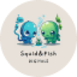
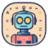

CognitoОбразование
«Cognito» работает с вопросами для проверки знаний.
Раздел «Помощь в учебе»: варианты ИИ для этой задачи, описания возможностей и переходы к обзорам. Сравните несколько решений на одинаковом примере.
Разберите одну учебную тему через объяснение и небольшие проверочные задания. Укажите свой уровень и место затруднения; попробуйте ответить самостоятельно, затем сравните ход рассуждения с учебником или преподавателем, чтобы понять причину ошибки, а не только получить итоговый ответ.
Объясни дроби начинающему ученику через деление пиццы на равные части. Дай два небольших задания без немедленных ответов, затем помоги проверить рассуждение и объясни типичную ошибку сравнения знаменателей.

«Cognito» работает с вопросами для проверки знаний.
«Debaters AI» представлен в разделе «Образование». При выборе проверьте нужную операцию и условия работы с результатом.
«Doctrina AI» готовит текстовый черновик по условиям задачи. Дополнительно «Doctrina AI» помогает упорядочить рабочие заметки.
Essay-Grader AI предназначен для помощи преподавателю при проверке эссе школьников и студентов. Инструмент можно рассматривать как дополнительный этап оценки письменной работы. Задайте критерии и сопоставьте замечания с конкретными местами текста; итоговую оценку стоит принимать после просмотра аргументации, а не по одному автоматическому выводу.
Numberly выполняет математические операции через онлайн-помощника. Доступны решение уравнений, перевод единиц измерения и переключение показателей. Инструмент рассчитан на учебное и профессиональное применение: разные виды числовой работы представлены в одной среде, где пользователь обращается к подходящему типу расчёта по своей задаче.
«SciPub» представлен в разделе «Создание текстов». При выборе проверьте нужную операцию и условия работы с результатом.
Student AI предлагает ИИ-инструменты для учебной работы и подготовки карьерных материалов. В набор входят сокращённый разбор документов, превращение видео в заметки и составление сопроводительных писем. Продукт ориентирован на студентов, которым нужны разные виды текстовой помощи: от работы с исходным материалом до оформления обращения к работодателю.
Taiga AI помогает изучать программную инженерию в диалоге и подключается к Slack. Наставник предоставляет индивидуальные рекомендации и пошаговое объяснение, а также обратную связь во время работы. Пользователь может обсуждать изучаемый материал и продолжать обучение с учётом своих запросов.
Zaplingo помогает практиковать английский язык с ИИ-репетитором через аудиосообщения. Пользователь получает обратную связь и работает с разговорными ситуациями. Пояснения по грамматике дополняют практику, позволяя рассматривать правила языка вместе с применением в собственных устных ответах и повседневном общении.
Сравнивать «Anki Card Generator» с другими инструментами раздела «Образование» удобнее на одинаковом исходном материале.
Cephadex предлагает индивидуальную учебную помощь с использованием интервального повторения. Инструмент предназначен для учеников, преподавателей, родителей и авторов обучающего содержания. Его основное направление связано с организацией возвращения к материалу через промежутки времени, чтобы подготовка учебной работы сочеталась с последовательным повторением, а не однократным знакомством с темой.
«Coursology» работает с вопросами для проверки знаний.
Essai.Pro помогает готовить и перефразировать эссе с участием ИИ. Инструмент предлагает темы и структурные планы, а отдельные средства предназначены для правки текста. Его основное направление связано с подготовкой письменной работы: от выбора содержания и последовательности аргументов до переработки формулировок уже созданного материала.
Essential использует компьютерное зрение и ИИ для работы с содержимым экрана на macOS. Приложение предлагает исправления и подсказки, а также выполняет функцию памяти о показанном материале. Проект имеет открытый код и связывает визуальное восприятие рабочего окружения с последующими рекомендациями пользователю.
Сравнивать «Explain Like I'm Five» с другими инструментами раздела «Образование» удобнее на одинаковом исходном материале.
«Frame by Brilliant Labs» представлен в разделе «Образование». При выборе проверьте нужную операцию и условия работы с результатом.
«Inkey» проверяет признаки происхождения или заимствования текста. «Inkey» перерабатывает формулировки написанного текста.
«ProfBot» представлен в разделе «Чат-боты и ассистенты». При выборе проверьте нужную операцию и условия работы с результатом.
«Quill» готовит текстовый черновик по условиям задачи.
Для «SYNAPSE» сначала определите свою задачу и требуемый результат. Карточка относится к направлению «Образование».
Кампус AI помогает студентам и школьникам готовить учебные тексты и презентации. Сервис также разбирает задачи с объяснением шагов и поддерживает подготовку к экзаменам. Работа доступна через сайт или Telegram-бота; в исходном описании продукт обозначен также названием «Кэмп».
Сравнивать «CheatGPT» с другими инструментами раздела «Образование» удобнее на одинаковом исходном материале.
Сравнивать «Coach Me Up!» с другими инструментами раздела «Помощь в учебе» удобнее на одинаковом исходном материале.
«Coursable.io» разбирает содержимое документов.
Сравнивать «Cousology» с другими инструментами раздела «Образование» удобнее на одинаковом исходном материале.
Для «Curiosio» сначала определите свою задачу и требуемый результат. Карточка относится к направлению «Образование».

Для «Explainia» сначала определите свою задачу и требуемый результат. Карточка относится к направлению «Образование».
Для «JotBot AI» сначала определите свою задачу и требуемый результат. Карточка относится к направлению «Транскрибация аудио».
«Lunchbreak AI» готовит текстовый черновик по условиям задачи. Дополнительно «Lunchbreak AI» помогает находить материалы по вопросу.
«Magic Form» работает с вопросами для проверки знаний.
Сравнивать «Mark This For Me» с другими инструментами раздела «Образование» удобнее на одинаковом исходном материале.
Для «Math Bot» сначала определите свою задачу и требуемый результат. Карточка относится к направлению «Помощь в учебе».
«AI Homework Helper (aihomeworkhelper.co)» помогает разбирать учебный материал.

«AI math solver» помогает разобрать математическое упражнение.
Сравнивать «CourseHero» с другими инструментами раздела «Образование» удобнее на одинаковом исходном материале.
Sensei на dunno.gg объединяет проверку учебных работ с ИИ, задания по STEM и среду для запуска кода в браузере. Преподаватель задаёт критерии оценки и может пересмотреть результат. Доступ к бета-версии требует приглашения.
«Shadowing AI» представлен в разделе «Образование». При выборе проверьте нужную операцию и условия работы с результатом.
AcademicHelp AI Writer создаёт эссе по теме, которую задаёт пользователь. Инструмент использует ИИ для подготовки целого текстового материала и ориентируется на академическое письмо. Назначение связано с получением черновика по определённому предмету: пользователь предоставляет тему, а система формирует связное письменное изложение.
«AI Math» помогает разобрать математическое упражнение.
«avtor24» представлен в разделе «Создание текстов». При выборе проверьте нужную операцию и условия работы с результатом.
Для «Gizmo» сначала определите свою задачу и требуемый результат. Карточка относится к направлению «Образование».
Job Interview AI предлагает репетицию собеседования на английском с участием ИИ. Практика проходит в реальном времени и связана с деловым языком. Пользователь тренирует разговор при устройстве на работу, используя взаимодействие с помощником как учебный формат подготовки к карьерному интервью.
Sensei Solutions создаёт текстовые материалы для учебных заданий на русском языке. Сервис работает с эссе и докладами, помогает готовить рефераты и другие объёмные работы. В основе используются языковые модели; доступ и расчёты ориентированы на пользователей из России.
StudyNinja помогает организовывать учебные задачи и ставить цели занятий. В продукте представлены обмен документами и помощь с обучением средствами ИИ. Эти функции дополняют работу студента с материалами, объединяя планирование действий и доступ к учебной поддержке в рамках собственного образовательного процесса.
«CustomWriting» готовит текстовый черновик по условиям задачи.
«Get Worksheet» подготавливает рабочие листы с учебными упражнениями.
«Quetext» проверяет признаки происхождения или заимствования текста.
«SmallTalk2Me» помогает изучать выбранный язык.
Страница 2 из 3